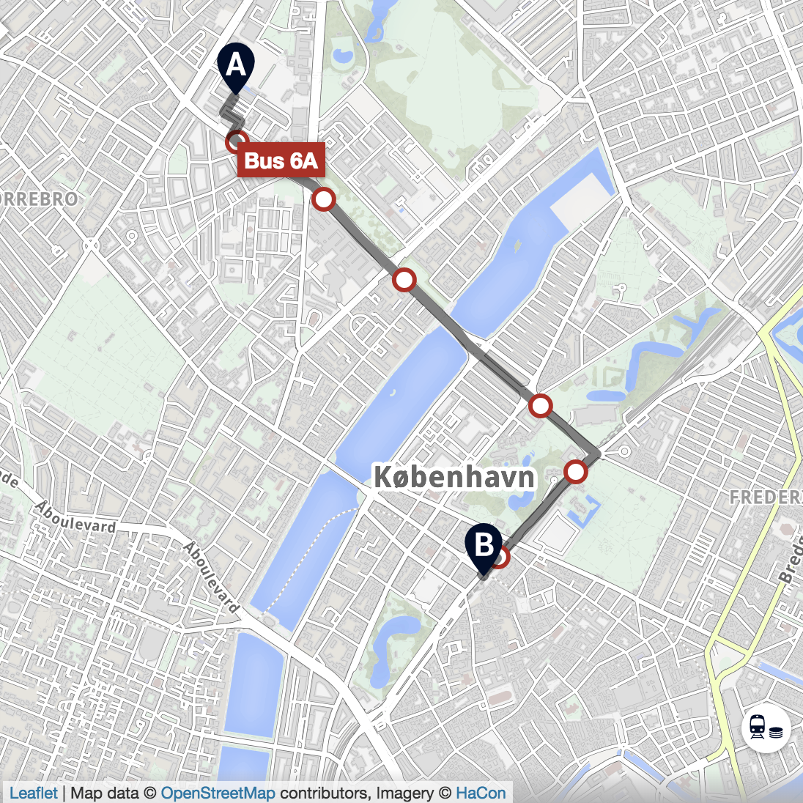

Past and live visualization (with maybe a a slight delay) of meteorological data such as wind, clouds, temperature, wave size, precipitation could be an interesting topic among many others.
The use that could be made of it could be:
The data set could be represented in two ways:
All the useful data for this visualization could be found on the websites of the official meteorological and climatological services of the country or countries concerned. Or by using some APIs like the one provided by Windy.
When using public transportation, I often have to walk for couple of minutes to get to the closest useful stop/station just to see my bus leaving in front of me while I wait at the crosswalk. So I'd like to see if the bus stop I walk to everyday has the most optimal location for the majority of its users. Bus stops are relatively easy to move, unlike train/metro stations and moving them by 100m or on the other side of the intersection could save minutes and reduce bus misses.
With data from Rejseplanen or Google Maps we could plot the ways people walk to bus stops. Potential overlaps of these paths and their intensity would then suggest possible relocation spots. For stops with multiple buses stopping there, we could color code the actual bus people take. This would be useful for large intersections where e.g. bus 1A stops on the west side but bus 2A stops on the east side and people changing between them have to cross the street twice.
I am interested in making sport visualizations and more particularly basketball-specific visualizations (e.g. shot-charts, performance charts, etc.). As a proof of concept, I could focus on specific leagues such as the NBA and go into even further details, by choosing specific teams. There is a variety of freely accessible statistical data about nba games, teams and players on stats.nba.com which can be used for this purpose. This could be used to make performance analysis and possibly be used to predict future games. The intended audience would be basketball enthusiasts (such as myself) and other people interested in using basketball statistics for one or another reason. If it becomes to be something exceptionally good, hopefully the NBA themselves will show interest in it ☺. My idea is nothing innovative, quite contrary - there are plenty of existing visualisations on this topic (e.g. Wizards shooting stars , or Psychology of a Professional Athlete which can serve me as inspiration but most of the ones I have found were team-specific or even player-specific for past years. Instead, I am rather interested in making an abstract interactive solution, which takes live data from NBA and continuously adds it to the charts.